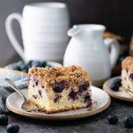
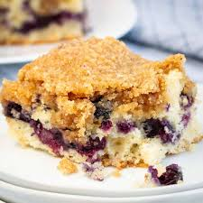
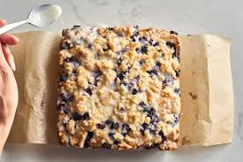
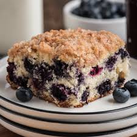

Classic Blueberry Buckle
Dive into a cozy classic with our Classic Blueberry Buckle, where juicy blueberries meet a crumbly, buttery topping for the ultimate comfort dessert.
Ingredients
Directions
Step 1:
Preheat oven to 375°. In a small bowl, cream butter and sugar until light and fluffy, 5-7 minutes. Add egg; beat well. In another bowl, combine the flour, baking powder and salt; add to creamed mixture alternately with milk, beating well after each addition. Fold in blueberries. Spread into greased 9-in. square baking pan.
Step 2:
For topping, in a small bowl, combine the sugar, flour and cinnamon; cut in butter until crumbly. Sprinkle over blueberry mixture.
Step 3:
Bake until a toothpick inserted in the center comes out clean, 40-45 minutes. Cool on a wire rack. If desired, serve with whipped cream and additional blueberries.
Step 1:
Preheat oven to 375°. In a small bowl, cream butter and sugar until light and fluffy, 5-7 minutes. Add egg; beat well. In another bowl, combine the flour, baking powder and salt; add to creamed mixture alternately with milk, beating well after each addition. Fold in blueberries. Spread into greased 9-in. square baking pan.
Step 2:
For topping, in a small bowl, combine the sugar, flour and cinnamon; cut in butter until crumbly. Sprinkle over blueberry mixture.
Step 3:
Bake until a toothpick inserted in the center comes out clean, 40-45 minutes. Cool on a wire rack. If desired, serve with whipped cream and additional blueberries.





Nutrition Information